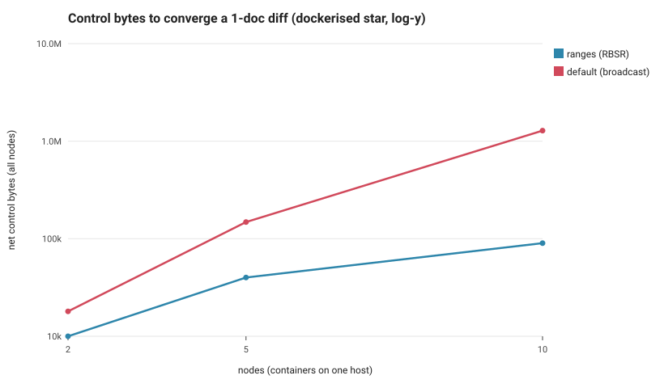
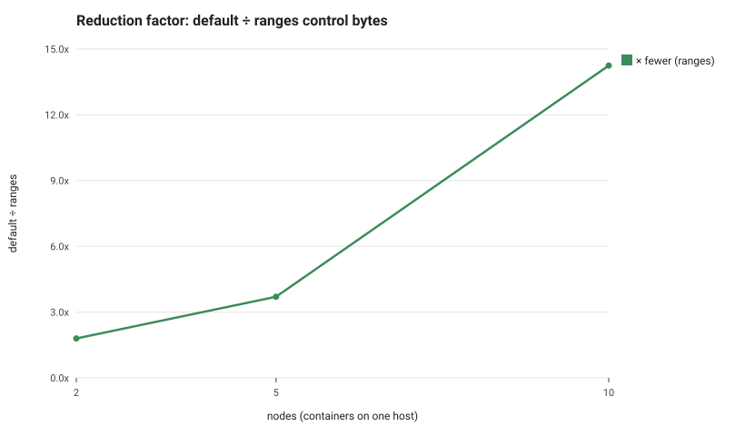

N benchnode containers on one host bridge (star topology, node0 the diverging hub), large shared base with one diverged document. Net control bytes = sum of every node's sent+received over the measured window. Reconciliation scales ~linearly with the star's edges; default broadcast grows super-linearly, so the reduction compounds with node count.


| nodes | ranges bytes | default bytes | reduction | converged | stateMatch |
|---|---|---|---|---|---|
| 2 | 10008 | 17984 | 1.80x | True | True |
| 5 | 40032 | 148190 | 3.70x | True | True |
| 10 | 90072 | 1283120 | 14.25x | True | True |